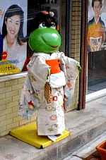

最終更新時刻,１月２０日午前２時
English here
|
【過去の新聞】
１月１０日号
１月１８日号
【カエル速報】
1.カエルグッズ
2.カエルリンク
3.国家健全化計画
4.謎の髭男
5.とっくりくん
6. 街頭で見た蛙
大王様へのメール
|
晴着姿は本当だった！！

|
|

|
１月２０日、福岡市近郊の某薬局前で、発見されたミッキー蛙が、新年に、晴れ着を着せられていたという噂は本当だった。カエルミッキーは、正月は、カエルミッキーではなく、和服に身を包んだ女装カエルになっていたのである。
カツラまでかぶっているぞ
Ｓ隊員とＤ隊員から寄せられた写真によると、カエルは、晴れ着で身を包んでいるだけでなく、頭にはカツラまでかぶっている。不二家のぺこちゃんの晴れ着は、見慣れた風景だけど、これは、素晴らしい力作だ。
しかも、よーく注意すると、手には手提げ、足には白い足袋、草履をはかせているだけではなく、口には、おちょぼ口にみえるように紅がさしてあるのである。まるで、わが子に施すような細やかな愛情の注ぎ方で、晴れ着を着ていたのだ。
いったい薬局の主人は、カエルをいつのころからか、すばらしい愛情を注ぐようになったのでしょうか。コーワ製薬もここまでキャラクターを可愛がってもらえたら幸せだぞ。謎は深まるばかりです。
|
写真の説明＝福岡県粕屋郡内で撮影。薬局の店頭にあるこるげんカエルは、晴れ着を着ていた。ぺこちゃんのように、オールシーズン衣装を変えるのだろうか。
|
かえる新聞のバックナンバーも見ましょう！！。
| １月１０日号｜１月１８日号


kaeru.rim のニュースは、随時更新されています。適宜、「Reload」ボタンを押して最新の内容をご確認ください。
各ページは HTML 3.0 でデザインしています。現時点では Natto Soupe 5.1以外のブラウザでは情報が欠落する場合があります。
Designed by HTML 3.0. Please browse with Natto Soupe 5.1, or you may miss out on some information .
kaeru.rimに掲載の記事・写真の有断転載なら自由です。
Copyright1996 Kaeru Shimbun. No reproduction or republication without written permission.
Send feedback to wakuro-3@hf.rim.or.jp
記事に対するご質問、ご意見には住所、氏名、電話番号を明記して下さる必要はないです。